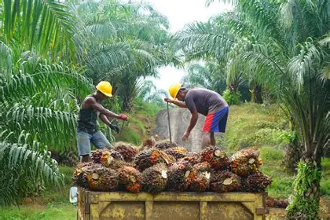
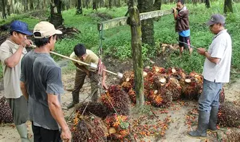
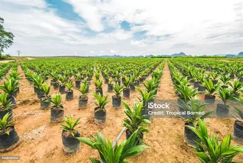
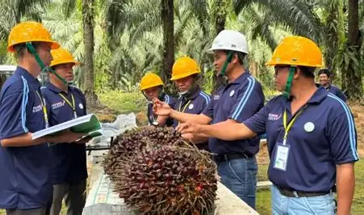
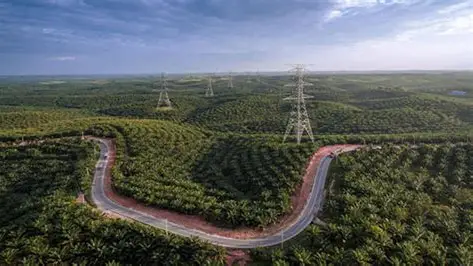

🌴 SAWITGO • GALERI
Melihat Lebih Dekat Dunia Perkebunan Sawit
Jelajahi berbagai dokumentasi perkebunan, aktivitas petani, kegiatan lapangan, dan perjalanan SawitGo.

2026
Dokumentasi SawitGo
TENTANG GALERI
Cerita di Balik Perkebunan
Galeri SawitGo menampilkan berbagai aktivitas yang berkaitan dengan perkebunan kelapa sawit.
Mulai dari aktivitas petani, kondisi perkebunan, hingga kegiatan lapangan yang menjadi bagian dari dunia sawit.
✓
Aktivitas petani
✓
Perkebunan sawit
✓
Kegiatan lapangan
✓
Dokumentasi SawitGo
GALERI FOTO
Dokumentasi SawitGo
Kumpulan dokumentasi kegiatan dan suasana perkebunan kelapa sawit.





MOMEN SAWITGO
Lebih Dekat dengan Aktivitas Kami
Dokumentasi menjadi bagian dari perjalanan SawitGo dalam mengenalkan dunia perkebunan.
Aktivitas Petani
Dokumentasi aktivitas petani dalam mengelola perkebunan kelapa sawit.
Kondisi Perkebunan
Gambaran lingkungan dan kondisi perkebunan kelapa sawit.
Kegiatan Lapangan
Berbagai kegiatan yang dilakukan di lingkungan perkebunan.
Perjalanan SawitGo
Dokumentasi perjalanan dan aktivitas SawitGo dari waktu ke waktu.
BUTUH INFORMASI?
Hubungi Kami
→
Mari Terhubung dengan SawitGo
Hubungi kami untuk mengetahui lebih lanjut mengenai layanan SawitGo.